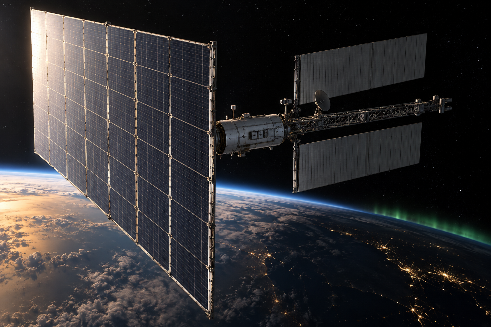
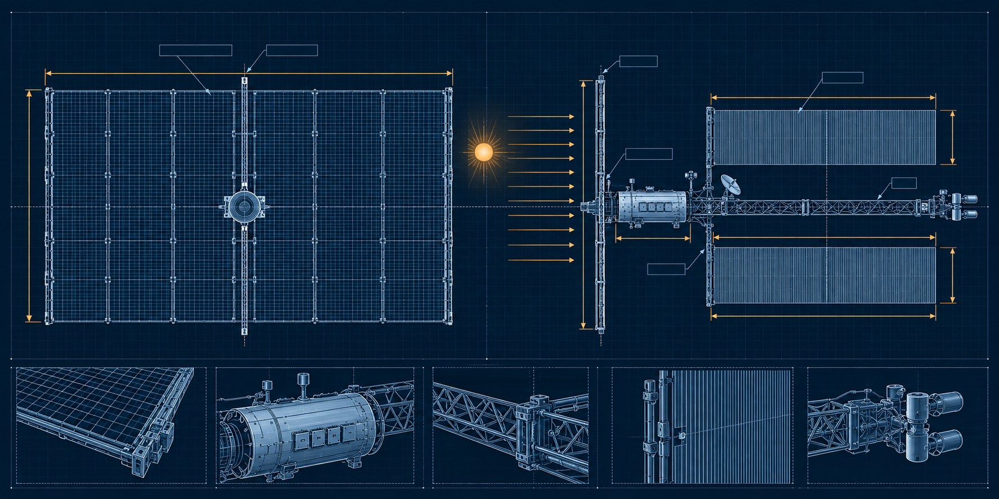
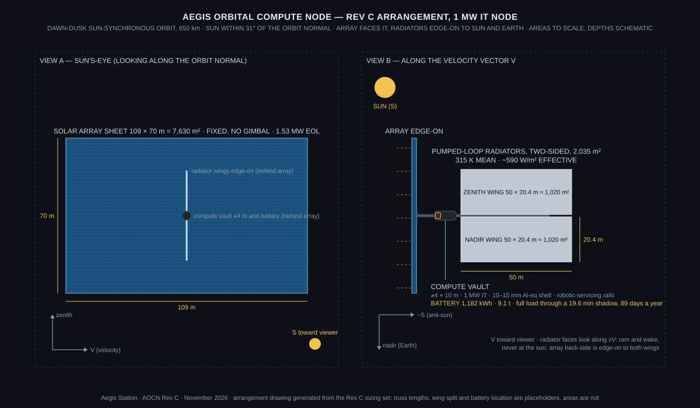

The Aegis Orbital Compute Node (AOCN) is a free-flying compute unit: one megawatt of commercial accelerators in a shielded vault, a fixed solar sheet that faces the sun all year, a battery for the weeks when the Earth gets in the way, and pumped-loop radiators that never see the sun. It runs batch work: model training, large-scale inference, simulation, and the processing of data that is already in orbit. It does not run a cloud. Nothing on it answers a request in milliseconds, and nothing on it needs to.
The node is the unit of scale. Capacity grows by flying more of them, not by making one bigger. Every node is sized, launched, and serviced the same way, and the compute inside is expected to be replaced every three to five years while the power and thermal plant stays.
The honest case is narrower than the slogans and stronger than the sceptics allow. Three things are true at once.
Terrestrial AI capacity is gated by interconnect queues measured in years, by water for cooling, and by siting permits. In orbit none of those exist. Power is not free; it costs launched array mass. But a square metre of array in a dawn-dusk orbit produces more than four times the energy of the same square metre on the ground, because it is lit about 96 % of the year at the full solar constant and needs storage for twenty minutes at a time, not for a night. The question is whether that buys back the launch cost, and the economics section answers it with a number rather than a mood.
Training a large model is weeks of computation on a dataset that arrives once and a result that leaves once. That is the opposite of a cloud workload. The dataset goes up on launched storage: ten petabytes on enterprise SSDs is under 200 drives and well under half a tonne. Checkpoints and weights come down over optical crosslinks. A dawn-dusk orbit passes a polar ground station on nearly every revolution, so downlink capacity is not the limit. The data section sizes it.
Earth-observation constellations downlink raw data they could process in orbit. Cislunar operations, when they exist, will want compute that is seconds away rather than a round trip through Earth. This is the only case with no terrestrial competitor. It is also the smallest market today, which is why AOCN is not designed around it. It is designed so that the same node serves it when it arrives.
| Leg | Method | Capacity | Note |
|---|---|---|---|
| Dataset up | Launched solid-state storage, installed with each compute refresh | 10 PB ≈ 164 × 61 TB drives, < 0.5 t | Cheaper and faster than any uplink; refreshed with the trays it feeds |
| Results down | Optical to polar ground stations, Ka-band RF fallback | ~110 TB/day at 100 Gb/s over ~150 min of contact | A 1 TB checkpoint at 10 Gb/s takes ~13 min; weather handled by station diversity |
| Tasking and telemetry | RF, continuous via relay | kb/s to Mb/s | Autonomous operation between contacts; ground plans, node executes |
| Node to node | Optical crosslink within a plane | 10–100 Gb/s | For distributed training across nodes in the same orbit plane; not required for a single node |
Dawn-dusk sun-synchronous orbits cross both poles every ~97 minutes. A single high-latitude optical terminal sees the node on most passes; two terminals on different continents cover weather.
A dawn-dusk sun-synchronous orbit keeps its plane at the day-night terminator all year, so a flat array in that plane faces the sun without moving. Rev B chose it at 650 km believing it had no eclipse at any season. That was wrong, and the error is worth showing. A sun-synchronous plane at 650 km is inclined 98°, so its normal lies 8° off the equator. Add the 23.4° tilt of the Earth's axis and the sun reaches 31.4° off the orbit normal at one solstice; the Earth begins to cover it at 24.8°. Rev B counted the 23.4° and left out the 8°.
The result is a shadow season of 89 days a year, with up to 19.6 minutes of shadow in each 97.6-minute orbit at its middle. For the other 276 days the node is sunlit all the way round. The array's worst day is the same day, and it falls near aphelion. No dawn-dusk orbit below about 1,400 km escapes this, because the inclination that keeps the plane sun-synchronous climbs with altitude.
| Option | What it takes | Verdict |
|---|---|---|
| Throttle in the shadow | Nothing added. The node delivers 95 % of a megawatt-year, is short of array on its worst 90 days, and its radiator wings swing about 50 K every orbit of the season | Not taken. A node that idles is not a megawatt |
| Raise the orbit to ~1,600 km, where a dawn-dusk plane has no shadow | The lightest node on paper, ~76 t with 5.6 t of xenon to climb and to come down again | Not taken. It is in the inner proton belt: about 37 times the dose behind the vault wall, a tray at its planning limit in months, and a dead node that never decays |
| 650 km at 28.5° with a battery | A 35-minute eclipse every orbit of the year: 2,100 kWh of battery, a gimballed array, unshaded radiators, ~100 t | Not taken. Cheaper launch more than pays for the mass, by about 12 %, inside the uncertainty, but it takes twice the proton dose and everything on it moves or cycles |
| 650 km dawn-dusk with a battery (Rev C) | 1,182 kWh of battery, a 7,630 m² fixed array, ~86 t | Baseline |
Rev B set out to delete the battery because everything downstream gets simpler without one. Most of that survives. The array is still a fixed sheet, the sun is still constant, the radiators still sit in the array's shade. Nothing moves. For 276 days nothing cycles; for 89 the battery does, and because it carries the full load, nothing else does.


The arrangement drawing is Rev C's. The illustration above it was drawn for Rev B and shows a 90 × 60 m array sheet; the arrangement is otherwise the same.
At steady state every watt of electrical input becomes heat. Commercial accelerators hold junction temperatures below about 363 K; direct liquid cooling delivers coolant at 305–320 K and returns it 10–15 K warmer. The radiator therefore runs between roughly 330 K inlet and 305 K outlet, a 315 K mean radiating temperature. Rev 1.1 stated 290–330 K; the same range, now pinned to a sizing point.
Two-sided rejection follows the Stefan-Boltzmann law with an emissivity of 0.88. An effective factor of 0.6 covers Earth infrared on the oblique face, view-factor losses between wings, coating degradation, and fin efficiency. With the array shading the wings and no direct solar load, this factor is conservative.
| Mean radiating temperature | Two-sided, theoretical | Effective (× 0.6) | Area per MW rejected |
|---|---|---|---|
| 300 K | 808 W/m² | 485 W/m² | 2,060 m² |
| 310 K | 922 W/m² | 553 W/m² | 1,810 m² |
| 315 K (baseline) | 983 W/m² | 590 W/m² | 1,700 m² |
| 320 K | 1,046 W/m² | 628 W/m² | 1,590 m² |
| 330 K | 1,183 W/m² | 710 W/m² | 1,410 m² |
The node rejects 1.2 MW, so the baseline radiator area is ~2,000 m² two-sided, carried as two 50 × 20 m wings with isolable sections. At 6 kg/m² for deployable pumped-loop panels the wings weigh about 12 t. If a future accelerator generation tolerates hotter coolant, the same wings reject more; the plant does not need to change when the trays do.
Rev B said "a pumped single-phase loop" and named no fluid. The fluid decides more than it seems. The wings that reject 1.2 MW keep rejecting when the load comes off, and settle near 205 K; the water-glycol that commercial liquid-cooled trays are built for freezes at 223 K. One loop of it freezes in the wings within two hours of the load going. One loop of a fluid that tolerates the cold costs the megawatt, because cold plates made for water-glycol carry half the heat with it.
Rev C carries two loops: water-glycol in the vault, through the trays, and silicone oil in the wings, which does not freeze above 162 K, with a counterflow heat exchanger between them. Each loop has redundant pumps. The exchanger costs 5 K, so the trays' coolant runs that much warmer than the wings', about 2 t, and about 9 kW more pumping. It buys three things: commercial trays on the fluid they are made for; a punctured wing that cannot drain the vault; and wings that can be left at the temperature of the sky for as long as the load is off or the sun is lost.
A time-stepping model of the trays, both loops and the wings by section (November 2026) reproduces this sizing point and shows where it is thin. Its tray, coolant and overhead figures are first assumptions, so these are directions, not specifications.
Rev 1.1 sized the array at ~2,500 m² per MW from beginning-of-life cell efficiency at normal incidence. That is the number for a new panel pointed perfectly on the day it deploys. The array has to make 1.2 MW on its last day, at its worst sun angle, through a blanket that is not all cells. In Rev C it has to do that on a day with a shadow in it, and refill the battery in the sunlit part of the same orbit.
| Step | Factor | Running value |
|---|---|---|
| Solar constant × 29 % triple-junction GaAs | — | 395 W/m² |
| Blanket packing (cells, gaps, harness, hinges) | 0.85 | 336 W/m² |
| Radiation degradation, 10 years in a polar orbit | 0.85 | 285 W/m² |
| Operating temperature derate | 0.85 | 243 W/m² |
| Worst-season sun angle, fixed array (cos 31.4°) | 0.85 | 207 W/m² |
| Earth near aphelion in the same season | 0.97 | 200 W/m² end-of-life |
| Step | Basis | Value |
|---|---|---|
| Longest shadow | June solstice, 650 km | 19.6 min of 97.6 |
| Energy through it | 1.2 MW electrical | 393 kWh |
| Pack energy | 35 % depth of discharge, 95 % discharge efficiency | 1,182 kWh |
| Pack mass | 150 Wh/kg at pack level, × 1.15 for thermal control, structure and management | 9.1 t |
| Recharge | 92 % round trip, inside the 78 sunlit minutes | 329 kW of array |
| Duty | About 15 shadows a day for 89 days | ~1,300 cycles a year |
Flown in the plant model at the June solstice at end of life, the node holds its megawatt through the shadow, the pack falls to 67 % and is full again before the next one, and the loop's temperatures do not move. A quarter of an every-orbit duty would support a deeper discharge and a pack nearer 5 t; the 35 % rule is kept until a cell is chosen. The same pack is the safe mode: with the sun lost it carries the survival loads for days, where Rev B's 50 kWh carried them for hours.
Rev 1.1 carried 15–50 t of water and structure as shielding for a compute payload. That is a crew figure applied to electronics. Silicon does not need a storm shelter; it needs a tolerable total dose, a handled upset rate, and a refresh plan.
| Group | Basis | Mass (t) |
|---|---|---|
| Solar array sheet | 7,630 m² at 2.5 kg/m² deployable blanket | 19.1 |
| Radiator wings and loop | 2,035 m² at 6 kg/m² pumped-loop panel; the battery's losses add 35 m² | 12.4 |
| Second loop | Heat exchanger, a second pair of pumps, and the wings' larger fill of silicone oil | 1.9 |
| Battery | 1,182 kWh at 150 Wh/kg, × 1.15 pack overhead | 9.1 |
| Compute trays and storage | 1 MW IT at ~12 kg/kW, liquid-cooled rack density | 12.0 |
| Vault structure and shielding | ⌀4 × 10 m shell, 10–15 mm Al-equivalent, rails | 5.0 |
| Power conversion, distribution, pumps, fluid, avionics, comms | Allocation | 5.0 |
| Truss, deployment mechanisms, attitude control, electric propulsion and propellant | Allocation | 7.0 |
| Subtotal | 71.5 | |
| Growth margin, 20 % | 14.3 | |
| Node mass | ~86 |
Rev 1.1 carried 40–80 t for 200–500 kW of accelerator. Rev B carried ~65 t for 1,000 kW by removing the water shield and the batteries and counting compute at the density liquid-cooled racks actually achieve. Rev C puts 21 t back: 9 t of battery, 6 t of array to refill it and to cover the true worst sun angle, 2 t for the second loop, and the growth margin on all three. The refresh cycle relaunches only the 12 t of trays.
Both an orbital node and a terrestrial hall buy the same accelerators, and those dominate the bill either way: on the order of $40–50 M per megawatt of current-generation hardware. What differs is the plant around them. A terrestrial AI hall costs roughly $10–15 M per MW to build, plus around $0.6–0.9 M per MW-year in energy. Over a five-year hardware life that is about $15–20 M per MW of plant and power, before the years spent waiting for an interconnect.
The orbital node replaces all of that with launch mass. At 86 t per megawatt:
| Launch price | Launch cost per MW node | Against $15–20 M terrestrial plant + power |
|---|---|---|
| $3,000 /kg | $257 M | 13× worse |
| $1,500 /kg | $129 M | 6× worse |
| $500 /kg | $43 M | ~2× worse |
| $300 /kg | $26 M | a third worse |
| $230 /kg | $20 M | parity |
| $200 /kg | $17 M | better |
| $100 /kg | $9 M | 2× better |
The crossover sits near $230 per kilogram to sun-synchronous orbit, before counting on-orbit assembly, qualification, and the operations team, which push it lower, and before counting the value of skipping a multi-year grid queue, which pushes it higher. That price does not exist today. It is the stated goal of fully reusable heavy launch, and the point of writing the number down is that it is a launch-price gate, not a technology gate. Everything else on this page is buildable now.
Rev B put the crossover at $300. Most of the difference is not the price of a decision; it is the price of the correction. The $300 node could not hold its load for 89 days of the year, and its coolant had no name.
Nothing in the node gets easier when it gets bigger. Deployed area, bending modes, pointing disturbance, fault-domain size, and the mass of any single failure all grow faster than the compute they carry. A 1 MW node is already a 109 m sheet with 50 m wings. The unit is fixed and the fleet grows.
The node does not care which body it orbits, but the case does. Around the Moon or Mars there is no advantage until there are customers there, and the Earth link gets worse. Where the case changes is the lunar surface, and only one part of it.
The daytime surface is not a cold sink. At the equator it reaches ~390 K at noon for two weeks, and regolith is an insulator, so nothing conducts into the ground worth counting. A radiator on the day side of the Moon looks at hot ground and a hot sun for 14 days and then at nothing but darkness for 14 more, with no power.
The polar surface is different. Rim sites near the south pole are lit 80–90 % of the year at grazing angles, and next to them are permanently shadowed floors at 40–100 K. A vertical radiator on a rim, facing the shadowed floor and the cold sky, rejects about 490 W/m² one-sided at 315 K with no Earth infrared and no solar load. Per square metre that is comparable to the orbital wing. The difference is everything around it: no launch of the plant from Earth once regolith structure and local water are available, no deployment mechanisms, radiators that can be built as walls, and the program's own water on site for thermal storage across the short polar nights.
The LEO node is the near-term product and the testbed for the plant. The lunar polar node is where the plant stops being launched. That is the same gate the rest of the program is waiting on: a viable moonbase and industrial-scale lunar water.
| Item | Rev 1.1 | Rev B | Rev C |
|---|---|---|---|
| Orbit | 500–600 km, generic; 35 % eclipse | 650 km dawn-dusk sun-synchronous; "no eclipse" | The same orbit; a shadow of up to 19.6 min on 89 days a year |
| Eclipse storage | 2.6 t/MW battery or throttling | Safe-mode pack only | 1,182 kWh, 9.1 t; full load through the shadow |
| Accelerator load | 200–500 kW in a 1–2 MW bus | 1.0 MW IT, 1.2 MW electrical | Unchanged |
| Radiator area | 1,800–3,300 m²/MW at 290–330 K | ~1,700 m²/MW at 315 K mean; 2,000 m² per node | 2,035 m² per node |
| Solar area | ~2,500 m²/MW, beginning of life | ~4,500 m²/MW end of life; 5,400 m² per node | ~5,000 m²/MW end of life; 7,630 m² per node |
| Shielding | 15–50 t water and structure | ~5 t aluminium vault; 3–5 year tray refresh | Unchanged; dose now from a proton model, ~150 rad a year |
| Node mass | 40–80 t | ~65 t, bottom-up with 20 % growth | ~86 t |
| Coolant | Not stated | "A pumped single-phase loop"; no fluid named | Two loops: water-glycol on the trays, silicone oil in the wings, a heat exchanger between |
| Use case | "Power density, thermal isolation, space adjacency" | Batch training and inference; space-native data second | Unchanged |
| Data path | Not stated | Launched storage up, optical down, budget stated | Unchanged |
| Economics | Not stated | Break-even near $300/kg to SSO, shown as a table | Break-even near $230/kg to SSO |
| Alternatives | Not stated | Not stated | Throttle, 1,600 km and 28.5° priced and shown |
The Rev C architecture reference document carries the sizing set above with its bases: the orbit and the alternatives priced, the battery, the mass budget, the economics table, and the lunar polar variant.